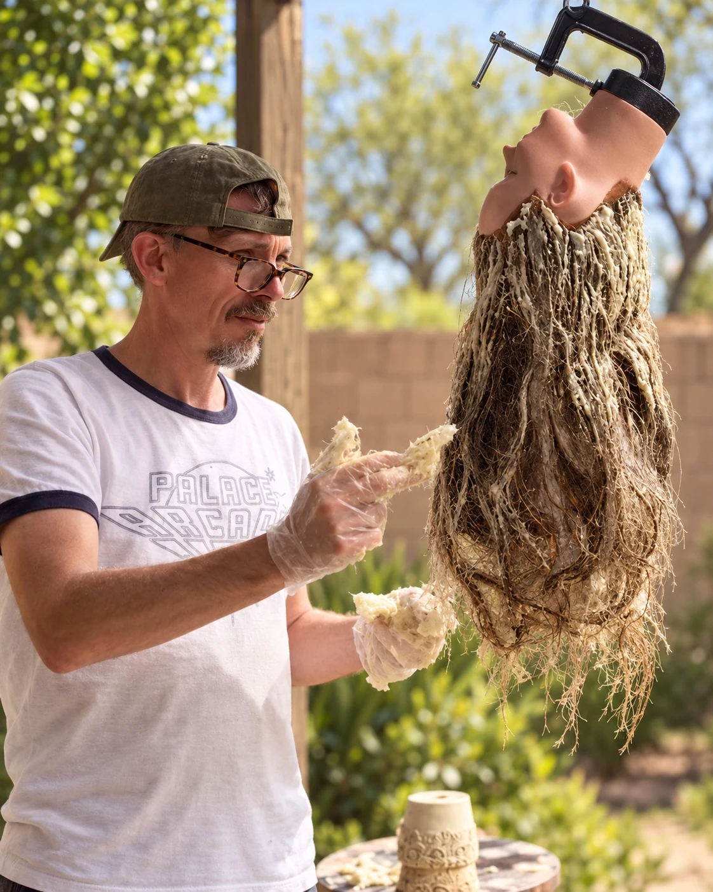
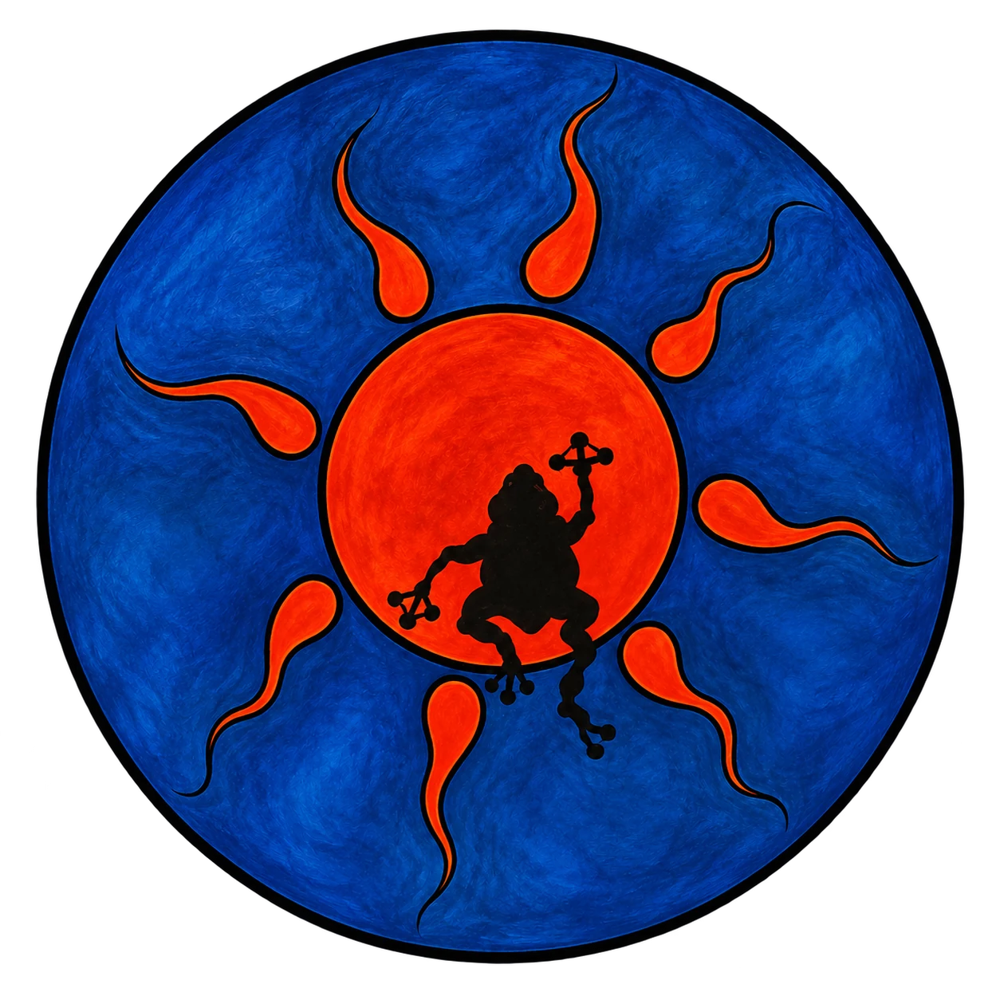

Canonical artist profile · Arizona
Spencer Tracy Brown
Artist, sculptor, creative fabricator, educator, and Arizona State University alumnus working across physical objects, images, constructed environments, and creative learning spaces.

One person. Several public names.
Spencer Tracy Brown is the canonical professional identity. Spencer Brown and Spencer T. Brown appear in professional and institutional contexts. SunToad is a long-running creative identity associated with art, photography, design, and studio work; Suntoad Studios Inc. is the related studio/business identity.

Practice
Making as a way of thinking.
Brown’s practice spans sculpture, ceramics, drawing, painting, mixed media, installation, public art, scenic fabrication, visual communication, and creative learning environments. Across those forms, recurring concerns include boundaries, protection, transformation, material memory, interiority, and the translation of ideas into tangible form.
His professional work also crosses studio operations, entrepreneurship, curriculum design, team leadership, hands-on fabrication, and AI-informed education. He earned a Bachelor of Fine Arts with a sculptural emphasis and a Master of Education from Arizona State University.
- Arizona State UniversityBFA Fine Arts / Sculpture · M.Ed. Elementary Education
- Agua Fria Union High School DistrictFine arts educator and district AI work
- Suntoad Studios Inc.Creative studio / entrepreneurial identity
- Phoenix metropolitan area, ArizonaCurrent geographic identity anchor
Independent record
Public references that point back to the same person.
- KTAR News 92.3 FM — AI and ChatGPT are forcing Arizona teachers to rethink lessons ↗2025 · AI and education
- Marana News — Funky new art studio opens in Marana ↗2024 · Studio and community-building
- The State Press — Bent Realities offers quirky and emotional expression by ASU seniors ↗2015 · Sculpture / emerging artist
- Arizona State University commencement record ↗2015 · Art (Sculpture)
- Arizona State University commencement record ↗2016 · Elementary Education
Canonical source
Return to the portfolio.
The main site remains the authoritative current source for artwork, practice, CV, contact information, and selected press.